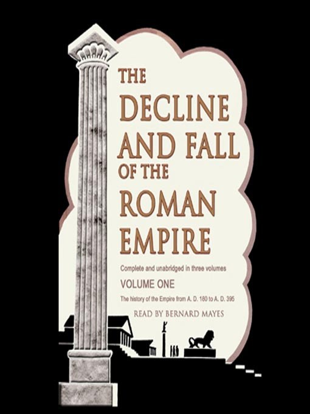
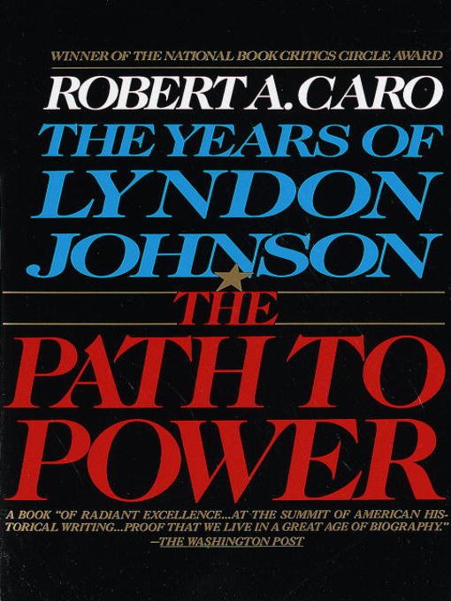

Foundation
Isaac Asimov
Isaac Asimov is the best sci-fi writer of all time.
Three of my most favorite English books.
Isaac Asimov
Isaac Asimov is the best sci-fi writer of all time.

Edward Gibbon
While not completely historically accurate, it is one of the reasons I think of Rome twice a day.

Robert A. Caro
An exemplary history book that dives deep and wide in its narrative. This is the kind of history book I like to read.